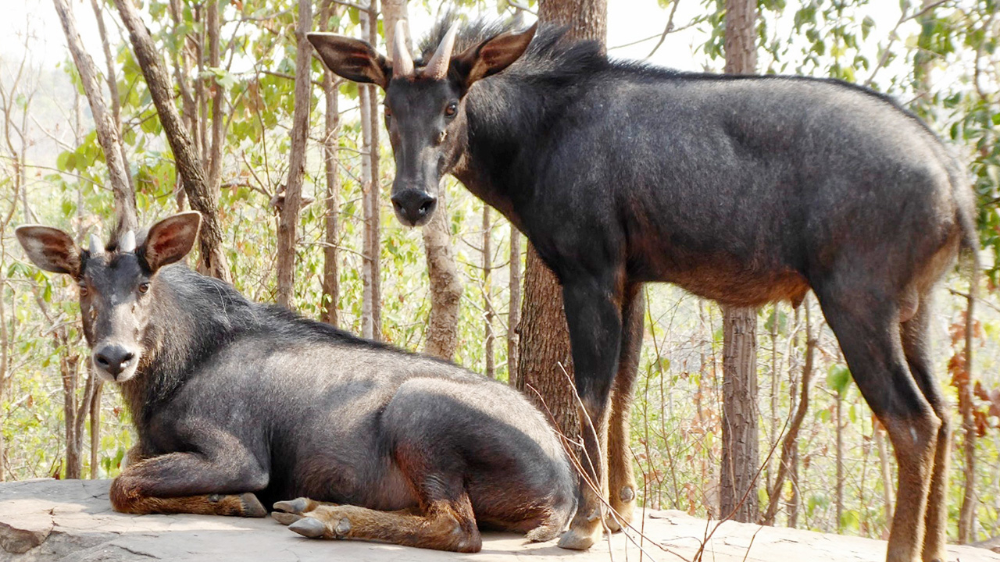

ประวัติการเปลี่ยนแปลงบัญชีรายชื่อ
เมื่อวันที่ 26 ธันวาคม พ.ศ. 2503 ได้มีการตราพระราชบัญญัติสงวนและคุ้มครองสัตว์ป่า พ.ศ. 2503 ขึ้น ซึ่งเป็นกฎหมายฉบับแรกที่กำหนดให้มี สัตว์ป่าสงวน จำนวน 9 ชนิด ได้แก่ แรด, กระซู่, กูปรี, ควายป่า, ละองหรือละมั่ง, สมัน, เนื้อทราย, เลียงผา และกวางผา โดยทั้งหมดเป็นสัตว์เลี้ยงลูกด้วยนมในอันดับสัตว์กีบ

ต่อมาเมื่อสถานการณ์ของสัตว์ป่าเปลี่ยนไปและเพื่อสอดคล้องกับอนุสัญญา CITES ที่ประเทศไทยเข้าร่วมในปี พ.ศ. 2526 จึงได้มีการตรา พระราชบัญญัติสงวนและคุ้มครองสัตว์ป่า พ.ศ. 2535 ขึ้นมาแทนที่ฉบับเดิม โดยกฎหมายฉบับใหม่นี้ทำให้การเพิ่มหรือแก้ไขรายชื่อสัตว์ป่าสงวนทำได้ง่ายขึ้นโดยไม่ต้องรอแก้ไขพระราชบัญญัติทั้งฉบับ
พระราชบัญญัติฉบับนี้ได้มีการ เพิ่มสัตว์ป่าที่มีความเสี่ยงต่อการสูญพันธุ์ อีก 7 ชนิด ได้แก่ สมเสร็จ (มลายู) เก้งหม้อ แมวลายหินอ่อน พะยูน นกเจ้าฟ้าหญิงสิรินธร นกแต้วแร้วท้องดำ นกกระเรียนไทย และได้ตัดเนื้อทราย ออกจากบัญชีสัตว์ป่าสงวน เนื่องจากสามารถเพาะพันธุ์ขยายจำนวนได้มากแล้ว
ในเวลาต่อมาได้มีการเพิ่มสัตว์ป่าสงวนอีกหลายครั้ง เพื่อให้ครอบคลุมสัตว์ที่กำลังถูกคุกคาม
- วันที่ 9 ตุลาคม พ.ศ. 2558 คณะกรรมการสงวนและคุ้มครองสัตว์ป่ามีมติเพิ่มสัตว์ 4 ชนิด ได้แก่ วาฬบรูดา, วาฬโอมูระ, เต่ามะเฟือง และ ปลาฉลามวาฬ
- วันที่ 24 พฤษภาคม พ.ศ. 2562 มีการตรา พระราชบัญญัติสงวนและคุ้มครองสัตว์ป่า พ.ศ. 2562 ขึ้นมาใช้แทนที่ฉบับเดิม
- วันที่ 8 มีนาคม พ.ศ. 2564 ได้มีการเพิ่ม นกชนหิน เข้าไปในบัญชีสัตว์ป่าสงวนตามข้อเสนอของกรมอุทยานแห่งชาติ สัตว์ป่า และพันธุ์พืช
- วันที่ 24 กันยายน พ.ศ. 2567 มีการประกาศพระราชกฤษฎีกาให้เพิ่มสัตว์ป่าอีก 2 ชนิด ได้แก่ วาฬสีน้ำเงิน และ นกชนหิน ทำให้ในปัจจุบันประเทศไทยมี สัตว์ป่าสงวนรวมทั้งสิ้น 21 ชนิด